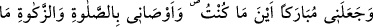
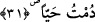

Ancak Allah Teâlâ, en büyük fazileti ve en büyük mûcizeyi Peygamberlerin efendisi
(s.a.)’e ikrâm etmiştir. Ona doğduğunda daha çocukken secdeye varıp Allâh’ın rasûlü
olduğunu söylemeyi nasîb etmiştir. Onun göğsünü açmış, onunla peygamberliği sona
erdirmiş, doğumunda melekleri ve hûrîleri ona hizmet ettirmiş, daha doğmadan ve
çocukluğundan önce ruhlar âlemindeyken ona peygamberlik vermiştir. Şüphesiz bunlar,
özellik ve üstünlük olarak yeter.
Dokuz feleğin ve yedi yıldızın güneşi
Rasûllerin sonuncusu, peygamberlerin hocası (s.a.)
“Bana kitabı” yani İncil’i “verdi ve beni peygamber yaptı.”
31. “Beni bulunduğum her yerde mübarek kıldı. Sağ olduğum sürece bana namaz
kılmayı, zekât vermeyi emretti.”
“Beni bulunduğum her yerde mübârek kıldı.” Yani ben nerede olursam olayım, beni
yararlı, hayrı öğreten kimse olarak yarattı. Burada ilerde vâki olacak şey, kesin olduğu
için geçmiş zaman kipiyle ifâde edilmiştir. İslâm âlimlerinin çoğunluğuna göre Allah,
Hz. İsa’ya çocukken İncil’i ve peygamberliği verdi. Çocukken olgun insanların
anladıkları şeyleri aklediyordu. Nitekim Bahru’l-ulûm’da böyle geçmektedir.
Fakir (Bursevî) der ki: Meşhur olan o ki, Allah İsa’ya otuz yaşından sonra
vahyetmiştir. Buna göre onun risâleti, nübüvvetinden sonradır.
Dünyada “sağ olduğum sürece bana” kesin bir emir olarak “namaz kılmayı ve
zekâtı” yâni sâhip olursam malın zekâtını “vermeyi emretti.”
Fakir (Bursevî) der ki: Açık olan şu ki Allâh’ın İsa’ya zekâtı emretmesi, onun zengin
olmasını gerektirmez. Aksine ona, ümmetinin zenginleri dolayısıyla bu emir verilmiştir.
İlâhî hitaplardaki genel ifâdeler, emirleri yerine getirme ve yasakları terk etme
hususunda ümmeti heyecanlandırsın diye, peygamberlere nisbet edilmiştir.
Bahru’l-ulûm’da şöyle der: Âyette işâret edilmektedir ki sağ olduğu müddetçe
mükellefiyetler ve zâhirî ibadetler, kuldan düşmez. Bazı ibâhîlerin dediği gibi
ibâdetlerin düştüğünü söylemek küfür ve sapıklıktır.
et-Te’vîlâtü’n-Necmiyye’de ise şöyle der: “Âyette işâret edilmektedir ki kul sağ
oldukça sırrını murâkabe etmesi, kulluğunu yerine getirmesi ve nefis tezkiyesine devam
etmesi gerekir.”
Fakir (Bursevî) der ki: Mükellefiyetleri yerine getirmek kulluktur. Bu mükellefiyetler
de ya yolun başındaki mübtedîlerde olduğu gibi tezkiye için olur ya da yolun sonundaki
müntehîlerde olduğu gibi şükür için olur. Her iki durumda kul sağ ve ergin olduğu